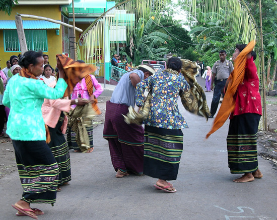

Indonesia Trav-E-Logs ©
Natal & Idul Adha in Wairiang
| back: Wairiang, Lembata | Morning After shot of main festival tent. |
================================= Been stuck in Wairiang for three days, waiting for boat transportation to Kalabahi. Had decided to backtrack today if no morning boat, but last night, while most people were trying to sleep, a healthy PA system was being set up. My morning walk discovers ceremonial tents and stage in the center of the village. Again folks say "Kalabahi boat tomorrow." Okay, one more day.... =================================
January, 2007
|
This festival celebrates both a Muslim and Christian holiday -- and is encouraged by the government in Jakarta to promote tolerance and understanding in areas with strong Christian ties. Each town apparently chooses the date for the celebration, as posters for similar events in other towns called for dates spanning several weeks. One can only imagine the religious riots in Sulawesi, Ambon, and Flores over the past 15 years have had much to do with this initiative. During the day, dancers in traditional garb made the rounds of nearby villages accompanied by drum and gamelan suspended on two bamboo poles. The women wore matching black sarongs, while the lone male dancer's sarong had deep lavender stripes. The dance leader used a whistle to both accent the beat and signal the others in the troupe. Click here for a sound bite. Decorations included many Indonesian flags, posters, and palm frond cuttings from the area. Notice the arch above the dancers in the photos below. Main stage decorations are shown at the top of the page in a snapshot taken early the next morning. Early evening brought all the politicians unto stage for interminable speeches. Town folk dressed in fancy garb sat in neatly arranged chairs set up in front of the stage. Behind several rows of chairs, tables were set up for serving refreshments. The folks dressed in street clothes sat on the periphery, and quickly became restless. I could not help but compare this to Independence Day Celebrations in the American mid-West during an election year. After a couple of hours, the speeches let up, simple food was served, and the over-amplified sound system turned over to the entertainment, consisting of comedians, game hosts, and musicians. How familiar does this sound to you? Soon the crowd started thinning out, so decided it was time to head across the street to my room and review the day's photos. Once inside my room the earplugs could come out, as the sound was just a dull roar. Besides, some rest will be needed as tomorrow will be a travel day -- either on to Kalabahi or back to Larantuka. Click here for a sound bite.  |
Photos clockwise from upper right: This gentleman wins my vote for best traditional garb; Lone male dancer takes well-deserved break; Traditional drum; Gamelan; Dance Troupe Musicians; Traditional Dancers under arch; Another view of Traditional Dancers. Can someone email me simple instructions on how to place a video clip with sound onto my web pages? Would love to share the clips of these dancers. |
Bill
Email me at: "juno.com" preceded by an "@" and "dancer2SEAsia"
"The backpacker discovers people are beautiful everywhere. It's the Governments that are evil."------------------------------
next: Wairiang to Kalabahi
back: Wairiang, Lembata